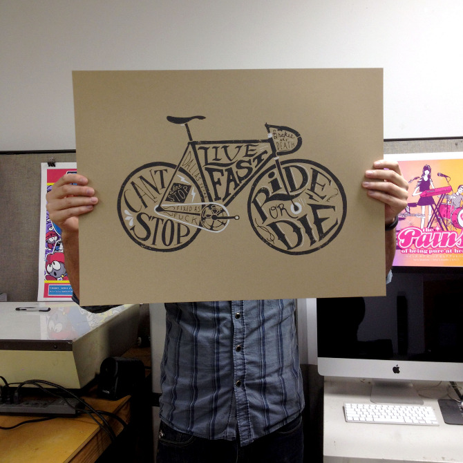

Fixed 4 Lyfe
Screen print for 'Sunday Peoples', a group exhibition for the love of bicycles. @The Public Trust.
Edition of 20
18''x24''



PREV/NEXT
Screen print for 'Sunday Peoples', a group exhibition for the love of bicycles. @The Public Trust.
Edition of 20
18''x24''
PREV/NEXT